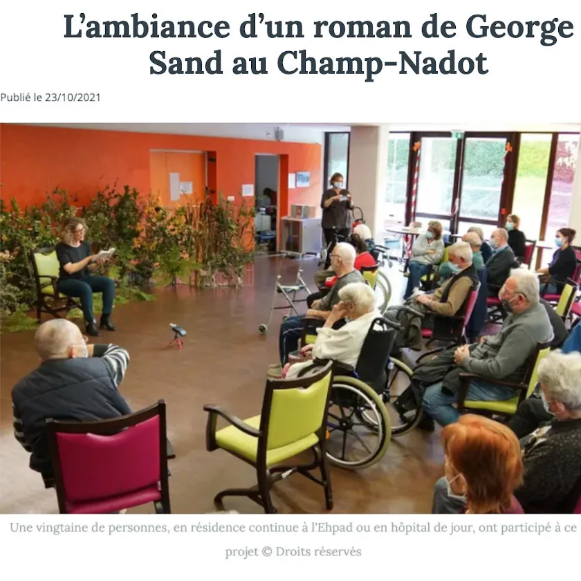

Paysans Paysages « sauvage »
Ce laboratoire, mené avec des résidents d’EHPAD et des patients d’hôpital de jour, a prolongé le projet Paysans Paysages dans une forme sensorielle et collective.
Autour de lectures à voix haute d’extraits de La Petite Fadette et de François le Champi de George Sand, Élise Truchard, Clotilde Gaillard et Jean-Christophe Désert ont mêlé paysages sonores, matières végétales et créations plastiques pour imaginer une expérience immersive autour de la littérature, de l’écoute et du vivant.
Dans la presse : « L’ambiance d’un roman de George Sand au Champ-Nadot », article publié le 23 octobre 2021 (titre du journal à compléter).